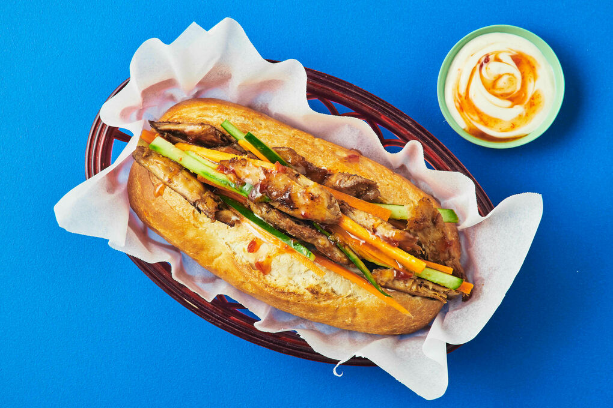

Pho

Description
Banh mi sandwiches are a Vietnamese street food that originated in Saigon. Served on soft French baguettes, they’re a delicious hybrid of French and Vietnamese cuisine.
- Step 1:Banh mi sandwiches are a Vietnamese street food that originated in Saigon. Served on soft French baguettes, they’re a delicious hybrid of French and Vietnamese cuisine.
- Step 2:Drain the tofu and slice it into ½-inch slices. Place it on a towel and gently pat dry to remove excess water.
- Step 3:Make the marinade: In a small bowl, whisk together the olive oil, tamari, lime juice and zest, garlic, ginger, and pepper.
- Step 4:Place the tofu in a shallow pan and pour the marinade on top. Flip the tofu to fully coat it, adding more tamari if necessary. Let the tofu marinate for at least 15 minutes.
- Step 5:Heat a nonstick skillet to medium-high heat. Add a little oil to the pan and place the tofu pieces with enough space between each so that they’re not too crowded, working in batches if necessary. Without moving the tofu slices around too much, let them cook for a few minutes per side until they’re deeply golden brown and caramelized around the edges. Remove from heat and season to taste.
- Step 6:Assemble sandwiches on the baguette with the spicy mayo, tofu slices, pickled veggies, and cilantro.